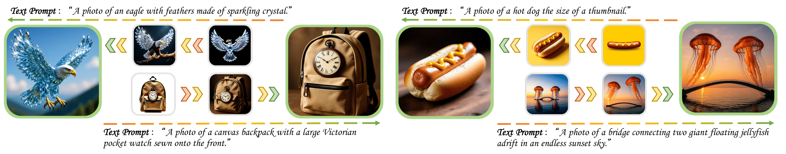
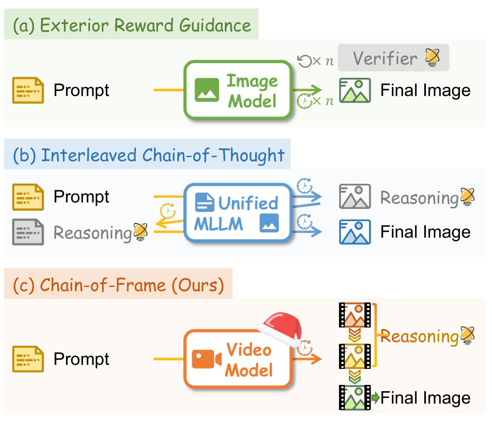
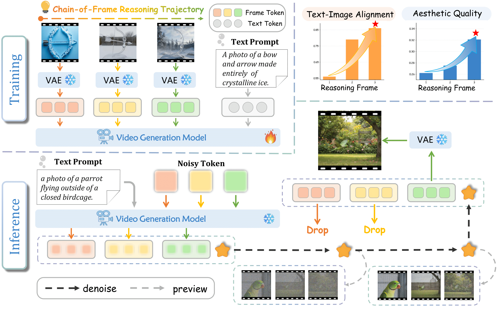
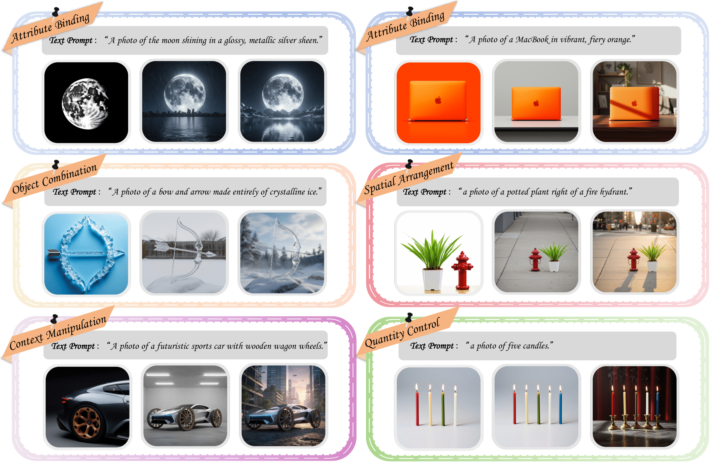
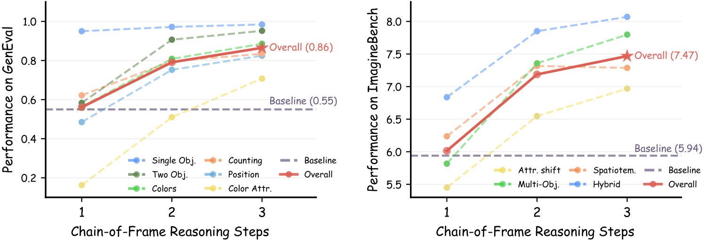

CoF-T2I:
Video Models as Pure Visual Reasoners
for Text-to-Image Generation
1Peking University 2Kling Team, Kuaishou Technology 3Sun Yat-sen University 4Zhejiang University 5Nanjing University
*Equal Contribution †Corresponding Author
[2026.1.16] 🚀🚀🚀 Paper and website live now! We are actively preparing to open-source our code, model, and dataset.

Visualization of the reasoning trajectories generated by CoF-T2I. For each example, the final output is shown in large, and the intermediate frames are shown in small.
Abstract
Recent video generation models have revealed the emergence of Chain-of-Frame (CoF) reasoning, enabling frame-by-frame visual inference. With this capability, video models have been successfully applied to various visual tasks (e.g., maze solving, visual puzzles). However, their potential to enhance text-to-image (T2I) generation remains largely unexplored due to the absence of a clearly defined visual reasoning starting point and interpretable intermediate states in the T2I generation process.
To bridge this gap, we propose CoF-T2I, a model that integrates CoF reasoning into T2I generation via progressive visual refinement, where intermediate frames act as explicit reasoning steps and the final frame is taken as output. To establish such an explicit generation process, we curate CoF-Evol-Instruct, a dataset of CoF trajectories that models generation from semantics to aesthetics. To further improve quality and avoid motion artifacts, we enable independent encoding for each frame. Experiments show that CoF-T2I significantly outperforms the base video model and achieves competitive performance.

Comparison of Inference-time Reasoning Models.
(a) Exterior Reward Guidance: Equipping image models with external verifier.
(b) Interleaved Chain-of-Thought: Interleaving textual planning within unified multimodal large language models.
(c) Chain-of-Frame: Our proposed video-based CoF reasoning model CoF-T2I.
(a) Exterior Reward Guidance: Equipping image models with external verifier.
(b) Interleaved Chain-of-Thought: Interleaving textual planning within unified multimodal large language models.
(c) Chain-of-Frame: Our proposed video-based CoF reasoning model CoF-T2I.
Overview

Overview of CoF-T2I. CoF-T2I builds on a video generation backbone, reframing inference-time reasoning for T2I generation as a CoF refinement process.
Training
Given a CoF trajectory, we employ a video VAE to separately encode each frame, and optimize a vanilla flow-matching objective.
Inference
Starting from noisy initialization, the model denoises to sample a progressively refined reasoning trajectory, only the final-frame latent is fully decoded and taken as the output image.
Quality Assessment
Along the CoF trajectory, text-image alignment and aesthetic quality continue to improve.
Data Curation

Visualization of CoF-Evol-Instruct Dataset. We design a quality-aware construction pipeline to curate reasoning data, ensures both sample-level diversity and frame-wise consistency.
Visualizations
Dataset Visualizations

Visualization of CoF-Evol-Instruct Dataset. We showcase the prompt and corresponding CoF trajectories in our data.
Qualitative Comparison

Comparison of the Wan2.1-T2V (baseline), Bagel-Think, and CoF-T2I. CoF-T2I produces satisfying results with both high photorealistic quality and precise alignment with the prompt.
Reasoning Trajectories

Complete reasoning trajectories of CoF-T2I, including the intermediate frames and the final output alongside their corresponding prompts.
Step-wise Quality Evolution

Evolution of generation quality across reasoning steps. The results exhibit a general ascending trend in performance scores across the inference steps on both GenEval (left) and Imagine-Bench (right).
BibTeX
@misc{tong2026coft2ivideomodelspure,
title={CoF-T2I: Video Models as Pure Visual Reasoners for Text-to-Image Generation},
author={Chengzhuo Tong and Mingkun Chang and Shenglong Zhang and Yuran Wang and Cheng Liang and Zhizheng Zhao and Ruichuan An and Bohan Zeng and Yang Shi and Yifan Dai and Ziming Zhao and Guanbin Li and Pengfei Wan and Yuanxing Zhang and Wentao Zhang},
year={2026},
eprint={2601.10061},
archivePrefix={arXiv},
primaryClass={cs.CV},
url={https://arxiv.org/abs/2601.10061},
}